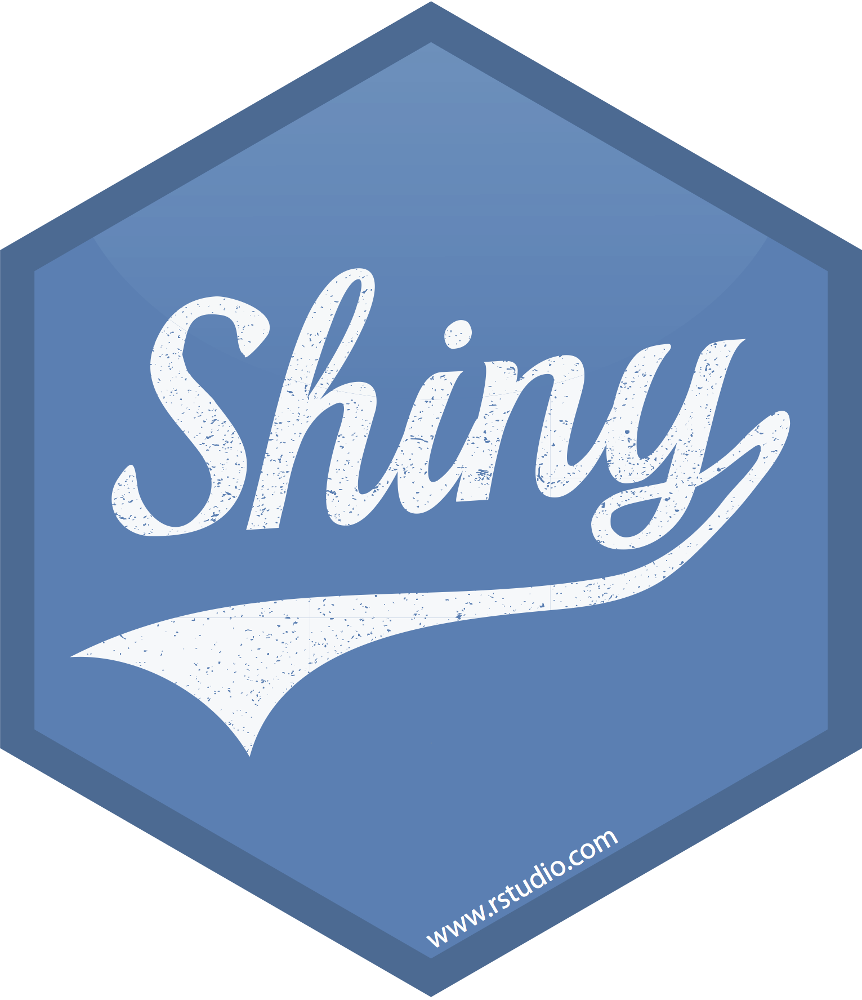

Shiny is an R library that allows R users to create interactive web applications without having to learn HTML, CSS or JavaScript.
This page includes the “State of Open Data 2017” Shiny app that was developed by the IDN as a case study for Figshare, it was built exclusively from R code - and can be found on Github.
This site aims to provide answers to the following questions: